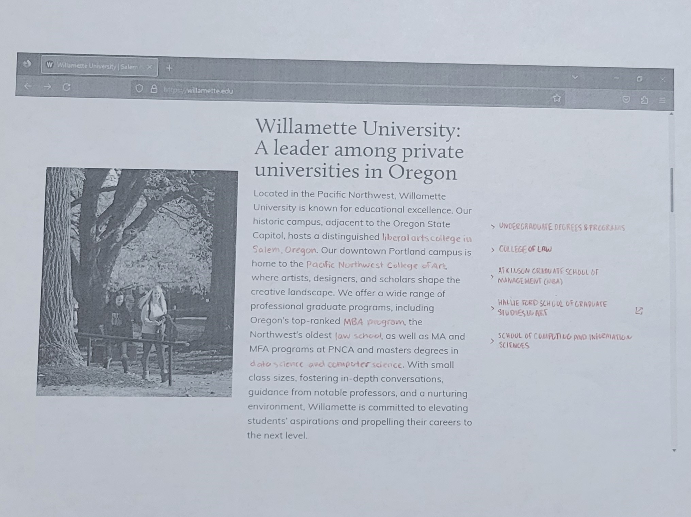
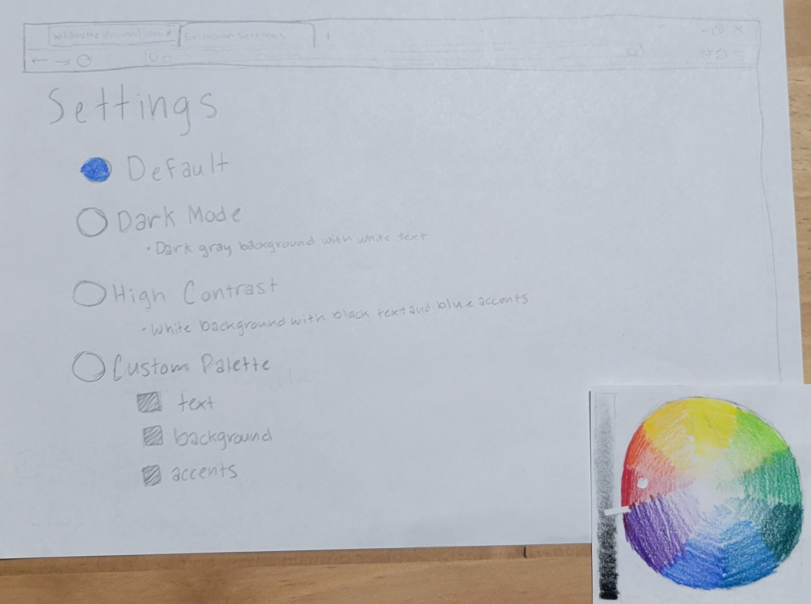
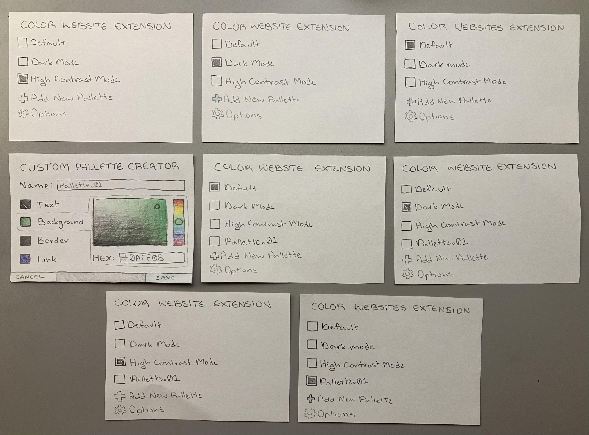
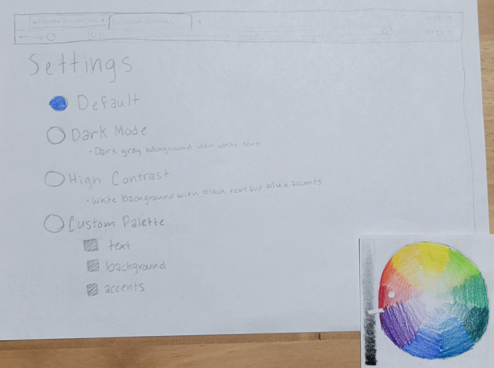
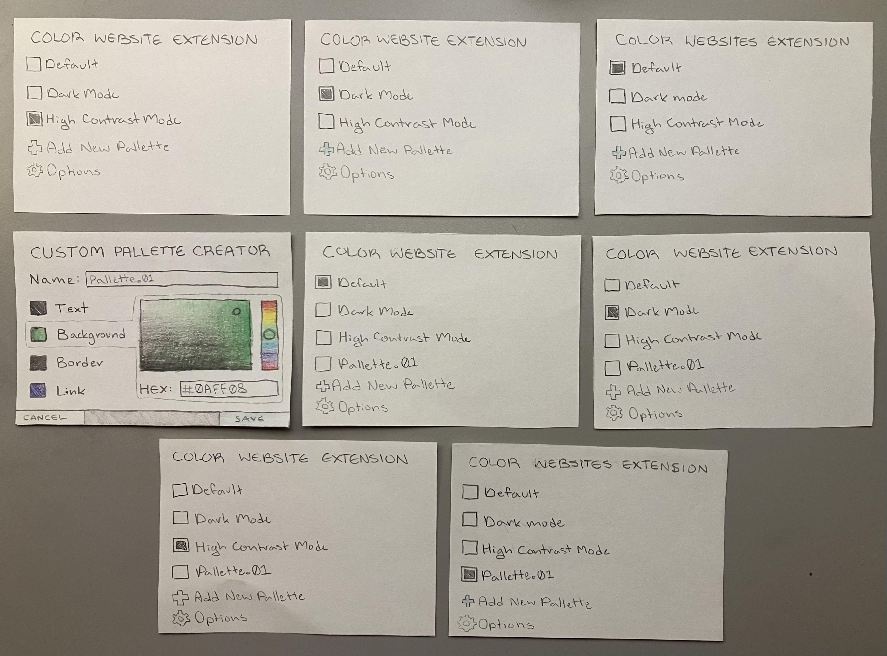
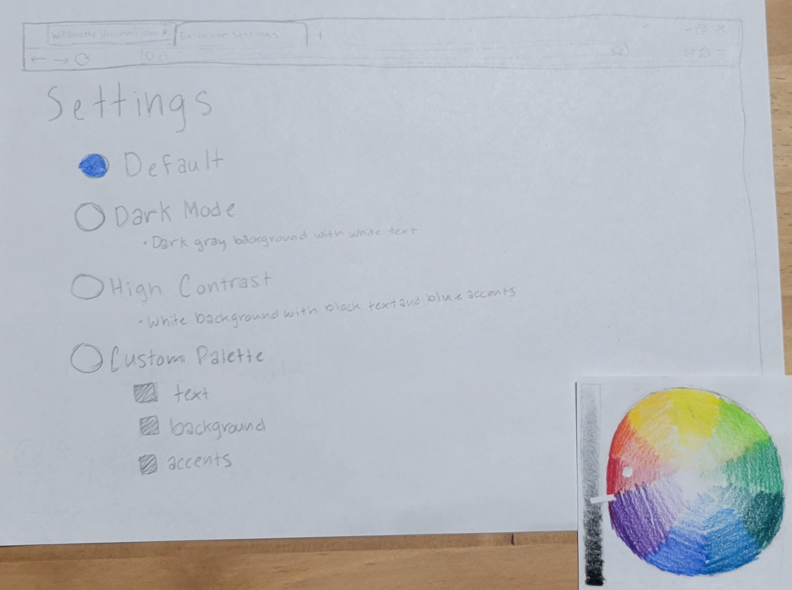
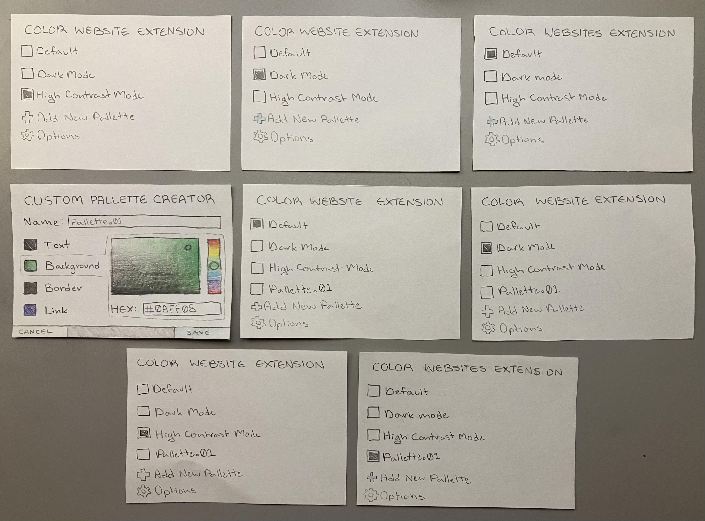

High-Fidelity Prototype and Evaluation Plan
User Manual:
To operate, first click on the
nightlight
icon in the top right corner of the screen. This will launch a popup.
From there, select from the following three modes:
1. Dark mode:
This will change the background color of the site to a dark grey and the text to light grey,
borders to a medium grey, and any containers (such as the background of the popup) to a medium grey.
2. High Contrast mode:
This will change the background color of the site to a light grey, the text to a dark grey, borders
to a medium-light grey, and any containers to a medium grey.
3. Custom Palette:
From here, choose the colors you want to set by typing in the hexadecimal codes for the colors, leaving
off the #. Then click submit, and the palette will be saved for your current session.
When you are done, click on the icon again to close the popup.
Prototypes:



 





Usability Goals:
New users should be capable of:
- installing the extension to their browser
- navigating and utilizing the extension within 15 minutes of use.
Benchmark Tasks:
- access the extension from browser menu
- Apply pre-built pallettes such as dark mode or high contrast mode to web page
- Create a custom pallette in the extension and apply it to web page